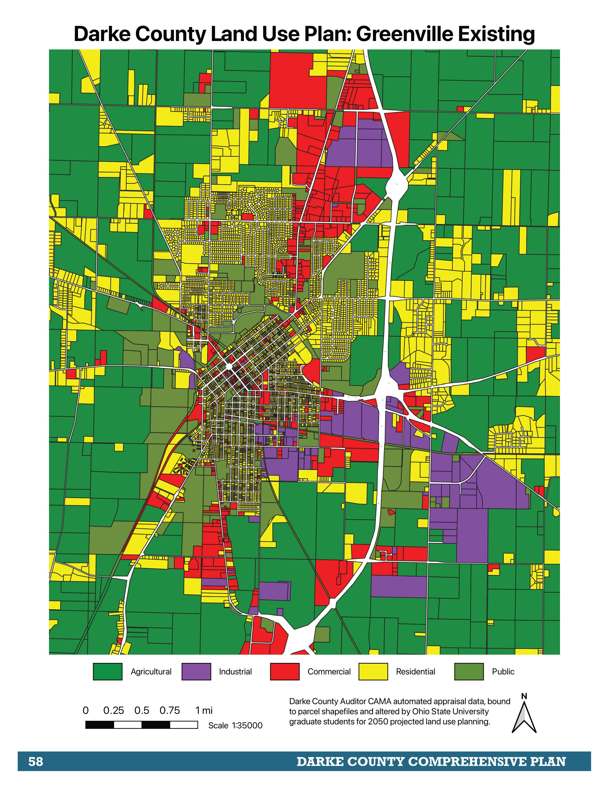

Data Analysis R Portfolio
Spencer See
Welcome to my personal data analytics portfolio from my City and Regional Planning studies to compliment my Landscape Architecture portfolio. As a dual masters student, I was often questioned on why I pursued a second masters in City and Regional Planning when Landscape Architects can fulfill that role proffesionally. My personal belief and focus in that program was the use of data analysis and developing both the hard and soft skills required not only to assess sites in more detail, but provide built environment interventions that could expand beyond the footprint of the design site. I believe more holistic aproaches to design and construction will be pivitol, leveraging the amount of data generated in the modern era as well as confronting the complex interdisciplinary nature of the challanges faced by society more directly in all scale of projects.
This is a collection of projects which I have initated myself with no outside guidance when faced with challenges both from class projects and proffesional tasks. Although some of these data cleaning tasks and visualizations are simpler than my R related coursework projects, they were all applied to roadblocks that would have otherwised hindered the entire team involved who did not have the ability to move forward in GIS appications or Excel the way I could with R. All of these tasks greatly increased the capacity of the stakeholders involved to move on with further analysis and objectives, supporting my overall goal of developing these skills as an asset to interdisciplinary projects in my future career. The code in the github repository is annotated to show my process and application of critical thinking to gain the results we needed when applicable.
Ultrinity: Geocoding and Data Enhancments as Spatial Programmer for "Turf Cutting" Tool Prototype
Spring 2024
This is a side project I decided to assist in outside of class or internship responsibilities. This project is a startup between a close friend and another practicing proffesional related to the Progressive Party of Ohio and strikes close to me given some of the personal struggles I have witnessed with the LGBTQ+ community and women alike in my state. Given the original two members expertise in Engineering and Political Science, I decided to assist in a generalist capacity as I have more experience in web native languages and automating spatial analysis tasks than the other two prototypers. This project is ongoing and is a way for me to learn rapidly in a fast paced environment while assisting in a social cause I feel passionate about. Along with expanding my R, HTML, and CSS skillset, I am also utilizing my knowledge gained from City and Regional Planning as well as multiple internships to add to conversation and consult in the overall direction of the project.

Comprehensive City and Regional Planning Studio: County Wide Current Land Use Plan Generation from CAMA Data
Fall 2023
This project was for a Comprehensive Planning studio with 5 other students that aimed to assist Darke County Ohio with a comprehensive plan. Unfortunately there was a need for zoning and cooperative planning, but no data had been pooled and mapped that could serve as a starting point. I was the only student profficient with GIS, and the data provided was in need of current updates. After research I was able to find where the outdated field of current land use originated from (CAMA or Computer-Assisted Mass Appraisal System) and create a script that would clean and append it to the parcel layer provided. This generated data provided a critical core of our project and is going to be used for future work and planning in the county.
Dense Matter Landscape Architecture Studio: Histortical Mapping and Site Suitability Analysis for Earthen Architecture
Fall 2023
With the first month of this Landscape Architecture Studio focussed on assisting in the construction of rammed earth structures for an art exhibit in Cincinnati Ohio (see Landscape Architecture Portfolio), the research and design phases were rapid. With research being hindered by the lack of spatial data available on the occurance of historic earthen architecture, I decided to hand reference a global research document (WHEAP publication) and use R to clean and reference the information. This data was shared with other students for their own projects. I later used R to assist in site selection based on community risk of being exposed to flood events and funding priority of FEMA tools. This allowed me to dive deeper into model testing and material research as well as construction document generation than otherwise would have been allotted due to time constraints.

Ohio Emergency Management Agency: Data Preparation and Analysis for State Hazard Mitigation Plan 2024
Fall 2023
Throughout my time as a Disaster Mitigation Intern for the Ohio Emergency Management Agency I would used R to clean or prepare data. Most of these tasks were related to the 2024 State Hazard Mitigation Plan update and assisted directly in that publication. Other tasks related to GIS data manipulation that would have otherwise been extremely difficult to extract or clean. At the time I was the only person capable of using R within several branches, so my knowledge was very useful to the team. I have included two tasks, one cleaning and reorganizing Crime Data for the State and another summarizing updated invasive species per county metrics accross 10 species of most concern. Although most of these were to implimented to our established maps or textual explainations, I did generate some graphics relating to the data.
Midwest Landscape Lab: Occurance Probability Mapping for Ohio based on Student Generated Species list and BIEN
Spring 2023
This project was based on knowledge that I gained from an elective course I chose to take from the School of Environment and Natural Resources. This course focussed on Landscape Ecology and was primarily tuaght in R. I applied this project and previous R experience to a follow up class which was an independent study for the Midwest Landscape Lab. Focussing on a species list of interest generated by other students, I was tasked with not only cleaning that data but using it to query occurance api's in an attempt to locate ranges and areas for sustainable harvesting and replanting of these species. This was my first unguided and self initaited R project which was rather intense. I learned from this experience by attemtping to take slower more manageable aproaches to learning so I would have a better foundation in data analysis, cleaning, and representation. Still, this proved to be very much appreciated by the students and the lab and further guided mapping of ecologies as a core component to the research work.